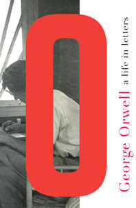
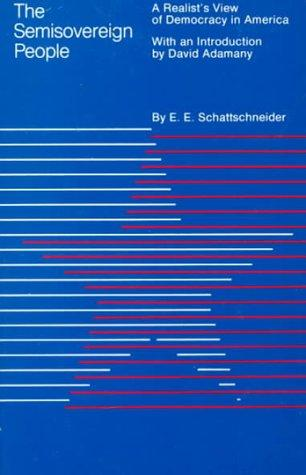
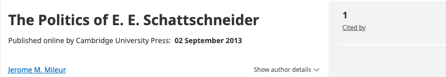
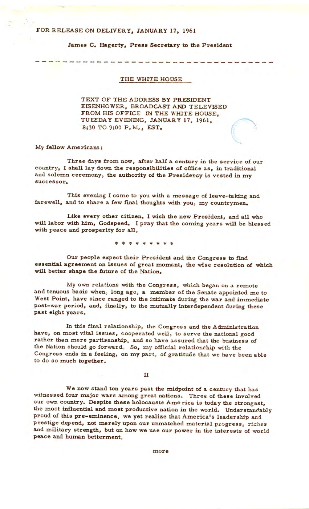

1:10:39 · 13 OPERE
Il popolo semisovrano.
Il filo del discorso
Il contributo propone di interpretare la politica mediante concetti e strutture, invece di limitarsi a raccontare gli avvenimenti o commentare i numeri elettorali. La critica riguarda anche la controinformazione quando riproduce formule e semplificazioni del discorso dominante. Dr Divago presenta la lettura come un lavoro di ricerca, capace di trasformare chi apprende e di rendere meno dipendente il giudizio dalle etichette applicate da altri.
Leggi la sintesi completaRiduci la sintesi
La parabola Davanti alla legge di Kafka diventa l’immagine di un accesso personale alla conoscenza, mentre l’episodio socratico dell’oracolo invita a riconoscere i limiti del proprio sapere. Il punto iniziale e finale è una lettera di Orwell sulla perdita della verità oggettiva sotto il totalitarismo. Il passo corrisponde alla lettera a Noel Willmett del 18 maggio 1944, riscontrata nell’archivio UCL; il volume di corrispondenza detto del 2003 non è identificato con certezza. La storia che cessa di esistere indica qui il pericolo di una realtà piegata alle parole del potere, e non coincide con la diversa tesi di Fukuyama. Il relatore applica questa preoccupazione al presente e polemizza con l’articolo di Emily Oster sulla cosiddetta amnistia pandemica. Il dissenso non diventa una diagnosi sulla persona. Inoltre il paragone della maschera con un semplice setaccio non esaurisce la filtrazione: dimensione delle particelle trasportatrici, materiali, cariche elettrostatiche e aderenza contano, con prestazioni differenti fra dispositivi. Il nucleo è The Semisovereign People di Elmer Eric Schattschneider, pubblicato nel 1960. La traduzione orale Il popolo semisovrano rinvia allo stesso libro. Dr Divago vi legge una teoria del conflitto politico: fra molte possibili divisioni sociali, quelle che diventano dominanti contribuiscono a determinare maggioranze e alternative. I partiti organizzano le fratture dell’elettorato e competono per definirne le questioni decisive. La sua applicazione alle elezioni italiane del settembre 2022 resta un’interpretazione: non dimostra da sola che ogni opposizione sia costruita o che le scelte dei cittadini siano prive di efficacia. Anche l’ipotesi di un rovesciamento contemporaneo del rapporto fra partiti e gruppi di pressione richiede riscontri ulteriori. Una digressione riguarda un articolo accademico del 1992. L’autore è Jerome M. Mileur, non Miller della trascrizione, e il titolo è The Politics of E. E. Schattschneider. L’estratto originale non conferma che tutto il ragionamento si riduca a un attacco personale: presenta l’etichetta di realista come onesta e attribuisce al nucleo della teoria un carattere aristotelico. Il relatore contesta il tono e chiede un confronto con i contenuti; tale esigenza di argomentazione vale anche per i suoi giudizi sul commentatore. L’eventuale scarsità commerciale di un libro non prova, da sola, una censura intenzionale. Il secondo testo di riferimento è un dizionario Fischer del 1975, identificato probabilmente con Wörterbuch kritische Erziehung, curato da Eberhard Rauch e Wolfgang Anzinger. Il catalogo e l’indice DNB ne confermano l’edizione e attribuiscono la voce Faschismus a Hans-Jochen Gamm. Attraverso quella voce il relatore discute una lettura marxista del fascismo, il ruolo degli interessi economici, la formazione, la paura e il capro espiatorio. Il confronto con il presente rimane suo: categorie teoriche ampie non equivalgono automaticamente a identità fra regimi o a qualificazioni giuridiche. La parte conclusiva ricorda Globke e Gehlen e i limiti della denazificazione, che vanno distinti dall’affermazione di una continuità istituzionale totale. Globke partecipò alla giustificazione e applicazione della legislazione razziale; il suo ruolo non coincide con quello di unico autore delle leggi di Norimberga. Gehlen passò dai servizi della Wehrmacht a organizzazioni del dopoguerra differenti per quadro e ordinamento. La riduzione della repressione dei crimini nazisti a pochi processi non restituisce la documentazione dei procedimenti effettivi. La chiusura riporta il conflitto fra potere politico e potere economico alla domanda sull’autonomia del popolo: memoria, fonti e discussione delle ragioni sono presentate come condizioni per mantenere aperta la democrazia.
I libri nel discorso

1984
Note sul riferimento
Copertina: Newton Compton · edizione illustrativa
1984 esplicito nel richiamo a una lettera relativa al personaggio femminile; non identificata qui tale ulteriore lettera e non dedotta dal solo romanzo la precisa raccolta usata.

Lettera a Noel Willmett, 18 maggio 1944
Identificazione probabile
Note sul riferimento
Copertina della raccolta contenente la lettera, Norton/Liveright 2013: Copertina della raccolta George Orwell: A Life in Letters, a cura di Peter Davison, Liveright / W. W. Norton, 2013, ISBN 9780871404626. La lettera a Noel Willmett del 18 maggio 1944 vi è contenuta: il toolkit istituzionale dell’American Repertory Theater la riproduce alle pp. 7–8 dichiarando questa raccolta Liveright come provenienza. Immagine del contenitore, non facsimile del foglio originale del 1944 e non identificazione della copia imprecisamente datata 2003 nel parlato.
Edizione editoriale Norton / Liveright 2013; il sito britannico data 5 settembre 2013. Non attribuita al relatore questa edizione né la paperback Penguin 2011; il volume citato oralmente resta senza identificazione certa.
Orwell e 1944 espliciti Nei passaggi citati; frase inglese letta nel passaggio citato a 220.42 s: have to fit in with the words and prophecies of some infallible furor. La resa automatica furor/furer è conservata come trascrizione automatica, non ascolto corretto. Nei passaggi citati il relatore attribuisce alla stessa lettera il passo sulla storia che ha cessato in un certo senso di esistere.
Let’s Declare a Pandemic Amnesty
Note sul riferimento
Illustrazione originale dell’articolo: The Atlantic, Ideas, 31 ottobre 2022; illustrazione editoriale Katie Martin / The Atlantic; Paolo Veronese; Getty
Immagine editoriale autentica pubblicata con il testo, non fotografia di un evento clinico né copertina libraria. Crediti della pagina indicati.
Emily Oster, Let’s Declare a Pandemic Amnesty, The Atlantic, 31 ottobre 2022 espliciti. Articolo di opinione, non libro o amnistia giuridica.

Apologia di Socrate
Identificazione probabile
Note sul riferimento
Copertina del volume Apologia di Socrate. Critone: BUR · Apologia di Socrate. Critone · a cura di Maria Michela Sassi, 1993
Copertina autentica del volume BUR contenente Apologia di Socrate e Critone. Il secondo titolo non è aggiunto come citazione del video; l’autore del testo è Platone, con Socrate come figura protagonista.
Socrate, responso dell’oracolo e sapere di non sapere: collegamento probabile al passo dell’Apologia, titolo non pronunciato.

Davanti alla legge
Note sul riferimento
Copertina: Vitalis, Edizione di Praga, 2024
L'indice del campione Vitalis colloca Davanti alla legge a pagina 42. Edizione italiana illustrativa, traduzione di Giuseppina Gatta, postfazione di Harald Salfellner tradotta da Manuela Boccignone; non identificata nel video.
Kafka e Davanti alla legge espliciti: parabola autonoma, non aggiunto un secondo riferimento al Processo per il solo contenimento.

The Semisovereign People. A Realist’s View of Democracy in America
Note sul riferimento
Copertina: Dryden Press · edizione 1975 con introduzione di David Adamany
Copertina autentica blu dell’edizione successiva con introduzione di David Adamany. Il testo originale è del 1960; la copertina non viene attribuita al volume mostrato nel video.
Il titolo tradotto Il popolo semisovrano, Schattschneider e il 1960 sono espliciti. Le grafie con o senza trattino si riferiscono alla stessa opera.

The End of History and the Last Man (La fine della storia e l’ultimo uomo)
Identificazione probabile
Note sul riferimento
Copertina: Free Press, 1 marzo 2006, 464 pagine, con nuovo poscritto. Prima edizione del libro 1992, distinta dall’articolo The End of History? del 1989.
Immagine autentica dell’opera, controllata visivamente; l’edizione di riferimento non è attribuita al filmato.
Fukuyama e fine della storia, prima saggio e poi libro: riferimento probabile del volume 1992. Il saggio 1989 è distinto, non confuso con una nuova edizione del volume.

The Politics of E. E. Schattschneider
Identificazione probabile
Note sul riferimento
Intestazione editoriale web; pubblicazione online 2013, articolo a stampa 1992: Intestazione originale della pagina editoriale pubblica Cambridge Core: The Politics of E. E. Schattschneider, Jerome M. Mileur. Intestazione della pagina, con titolo, autore e data di pubblicazione online del 2 settembre 2013. Articolo originale in PS: Political Science & Politics 25(2), giugno 1992, pp. 176–180, DOI 10.2307/419703. Non prima pagina PDF, facsimile del 1992 o copertina libraria.
La data visibile 2013 è la pubblicazione online, distinta dall’uscita originale a stampa del giugno 1992. Nessuna prova della copia visualizzata dal relatore.
A 2033.37 s la trascrizione automatica riporta Jerome Miller e University of Massachusetts Hummers; a 2059.52–2071.97 si introduce l’articolo con il realista autoproclamato. A 2184.08–2255.3 sono ripresi l’incipit, l’etichetta onesta, la rissa iniziale e la critica alla definizione di democrazia. La collazione di questa sequenza con l’estratto Cambridge identifica probabilmente il contributo di Jerome M. Mileur.

La vita di Agricola (De vita et moribus Iulii Agricolae)
Identificazione probabile
Note sul riferimento
Volume: Agricola e Germania: Copertina del volume La vita di Agricola. La Germania, BUR, 27 giugno 1990, ISBN 9788817167819, traduzione di Bianca Ceva, introduzione e commento di Luciano Lenaz. Il catalogo corrente dell’editore indica 320 pagine; altri cataloghi riportano 240, non risolte per singola tiratura.
Copertina autentica BUR gialla e azzurra con particolare di oggetto metallico, titolo delle due opere, curatore e traduttrice. Il volume contiene anche la Germania, che non viene contata come citata nel video. Il titolo Agricola è inferito dal passo, non pronunciato; edizione di riferimento non assegnata al filmato.
Tacito, fanno un deserto e lo chiamano pace: rimando probabile all’Agricola 30, discorso assegnato a Calgaco, titolo non pronunciato.

Politica
Note sul riferimento
Copertina: Bompiani · Testi a fronte, 2016 · a cura di Federico Ferri
Immagine autentica dell’opera, controllata visivamente; l’edizione di riferimento non è attribuita al filmato.
Il relatore chiede un rimando alla Politica di Aristotele nell’analisi di Schattschneider. È il titolo di un’opera, distinto dalla semplice etichetta aristotelico.

Discorso di commiato alla nazione (Farewell Address), 17 gennaio 1961
Identificazione probabile
Note sul riferimento
Prima pagina del comunicato originale del discorso di commiato del 1961: White House · comunicato stampa del 17 gennaio 1961 · prima pagina
Prima pagina del comunicato dalla copia conservata dalla biblioteca presidenziale. È un documento d’archivio, non una copertina di libro. PDF originale e relativa impronta conservati privatamente.
Eisenhower mentre lascia la Casa Bianca e avvertimento sul complesso militare-industriale: identificazione probabile del discorso 17 gennaio 1961, titolo non pronunciato.
Wörterbuch kritische Erziehung
Identificazione probabile
Note sul riferimento
Fotografia della copertina di un esemplare della edizione 1975: Fischer-Taschenbuch-Verlag, Frankfurt am Main, 1975; ungekürzte Ausgabe, Fischer-Handbücher 6301, 383 pagine, ISBN 9783436021641
Fotografia primaria dell’esemplare nel catalogo Bookbot, distinta da immagine promozionale dell’editore. Non certifica che sia la copia mostrata nel video. L’opera ebbe edizioni precedenti: 1975 è l’edizione Fischer identificata, non prima pubblicazione assoluta.
Dizionario Fischer sulla formazione critica, anno 1975 corretto dal relatore a 3469 s, voce fascismo letta. Identificazione probabile con il volume Rauch / Anzinger verificato da DNB; testo completo e copia del filmato non collazionati.

Dialettica dell’illuminismo
Note sul riferimento
Copertina: Einaudi, Piccola Biblioteca Einaudi, 2010
Edizione illustrativa dell'opera, con traduzione di Renato Solmi e introduzione di Carlo Galli; non identificata nel video.
Dialettica dell’illuminismo, l’edizione Fischer dell’anniversario e la prefazione criticata sono esplicite. Il catalogo dell’editore conferma l’edizione del 2022 con Eva von Redecker.